Making of the Box:
I wanted to make a box that was easy to assemble and also easily taken apart. That means NO GLUE. First, I thought
about including screws and bolts, but then I saw a box made by a fellow student that used joints that looked like
Mortise and Tenon joints and decided to give that a go. Eventually I ended up designing a box that needs zero tools
for assembly. I opted for Mortise and Tenon joints, because when I used finger joints for my box from week 2, I had to
use glue to keep my box together. Also that box felt weak when it was loaded with heavy materials.
To connect the bottom with the other sides of the box I had all the tenons attached to the bottom plate and
alls the mortises/holes in the other plates. I made this design choide to prevent the bottom from falling when the
box is lifted up.
I also needed a piece in the middle that would separate the box into 2 parts. Part I for the plant +
water bottle and 1Part II for the electronics/microcontroller. Part II also has a plateau for the
peristaltic.
Before I started designing the box in 360, I measured the water bottle, plant cup and peristaltic pump with a caliper.
I also made a rough sketch of how I wanted to connect the different plates/sides of the box.
Brainstorm:
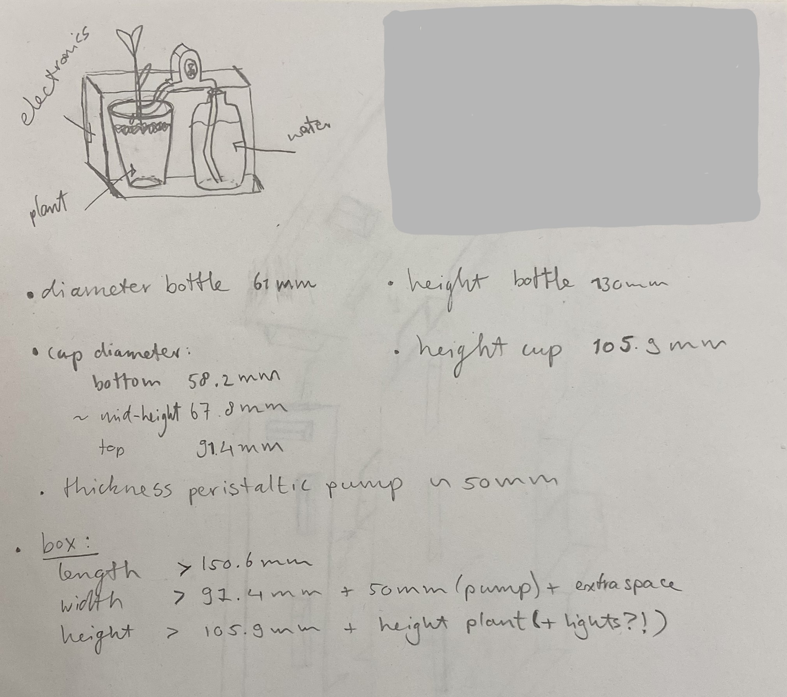
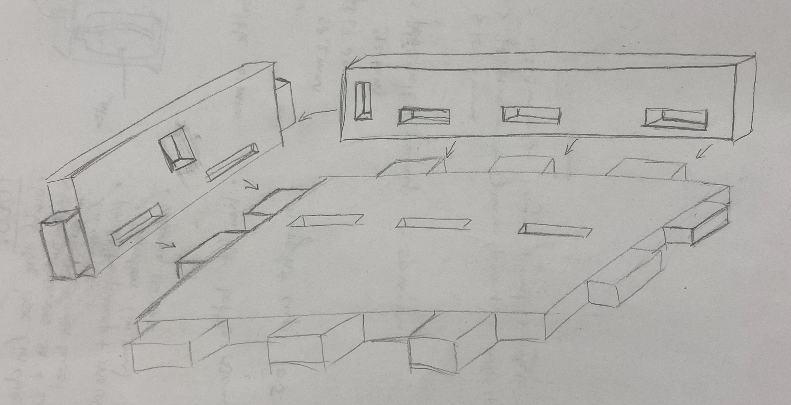
After that brainstorm, I turned to Fusion 360 to start designing the box in 3D. Instead of making drawins in 2D,
I designed the entire box in 3D and used the projection function to get sketches of the different sides of the box. I
saved these sketches as DXF files and cut them with the lasercutter.
I wanted my design in Fusion 360 to be quite flexible because I wasn't sure how big my final box was eventually going to be.
I anticipated I may run into issues in my design process and assembly, so I wanted it to be easy to change the dimensions of my box.
For this, I used parameters for the width, length, height, corner_space, finger joint lenght, material thickness, etc.
In my design it is fairly easy to adjust the number of joints on each sides of the plagues. However, this was not very easy to accomplish.
When I started my first attempt I drew the side with the fingerjoints and extruded that in one go. However, I soon realized this was't going to work
if I wanted to adjust the number of joints. I then switched to extruding a rectangle, then extruding 1 single joint on a side and extending that feature.
I remembered this trick from following tutorials that helped me make the finger joint box in week 2. This method proved to be much more effective.
FUSION 360: TODO
When my design was finished I wanted to test if my Mortise and Tenon joints would work. Therefore, I copy pasted my design and
halved the dimensions. I had to do some problem solving because of the middle piece and some joints because it didn't perfectly
translate to a much smaller size. However, after a quick fix I had enough to test my joints and design. I printed 3 sides of this mini test box:
bottom, middle and side plates.
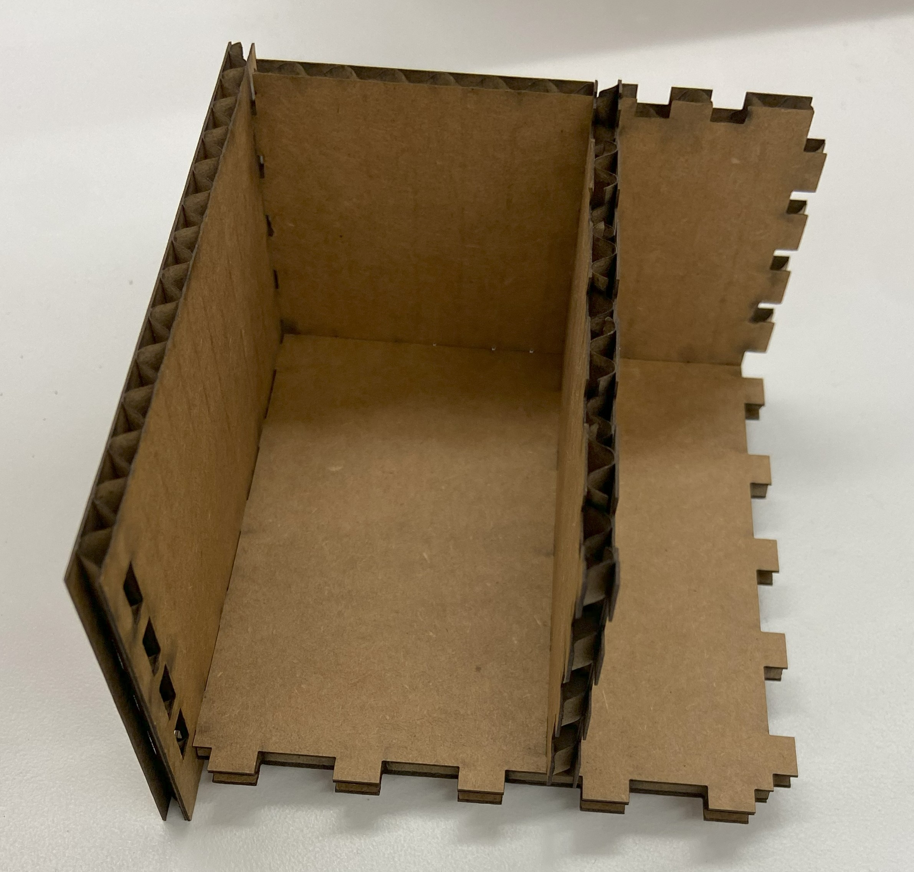
Fortunately, this test showed my joints worked. I then decided to cut out my entire box using cartboard. I felt like I needed to see the physical
box before I continued designing the holder for the peristaltic pump and the holes for the wiring. By using cartboard I would be able to easily cut
out a hole for wiring and adjust my design. When I was satisfied I measured the dimensions with a caliper and included it in my 3D design.
Thankfully, the box was easy to assembl and the joints fit really well first try (bless). I didn't have to use any glue and I could feel the box was very sturdy.
Assembly
Unassembled: outer plates
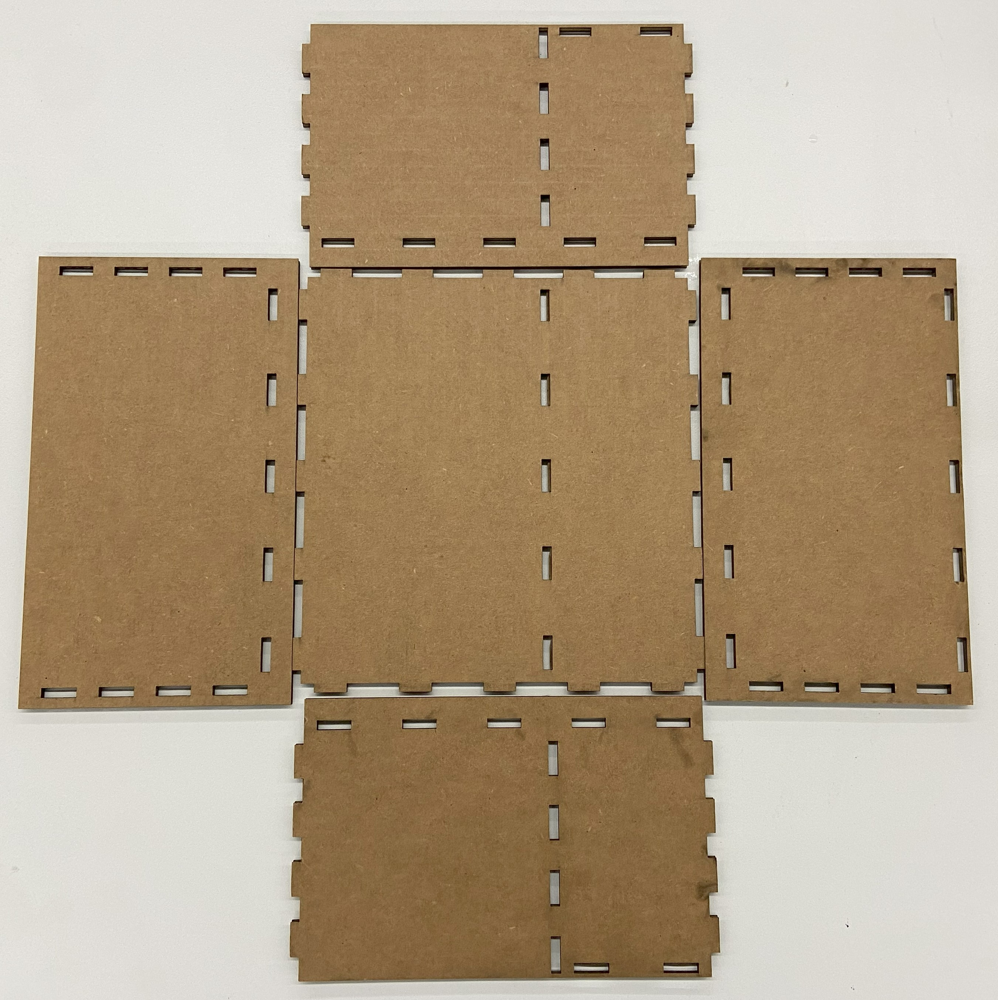
Unassembled: ALL pieces
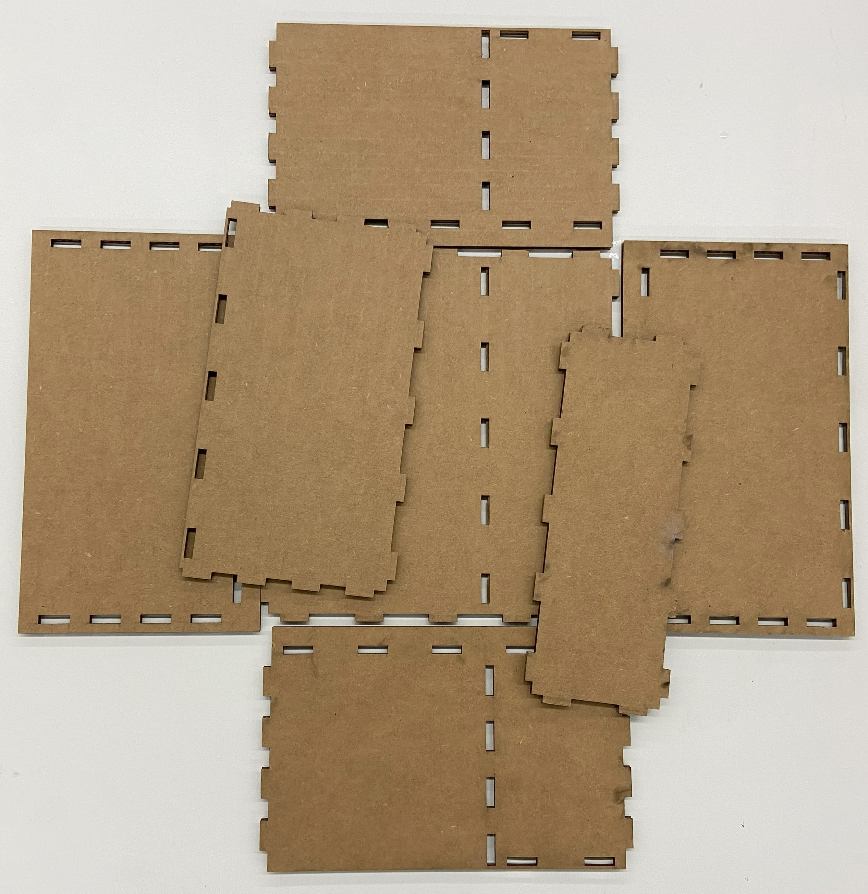
Step 1
Push middle plates into the bottom plate.
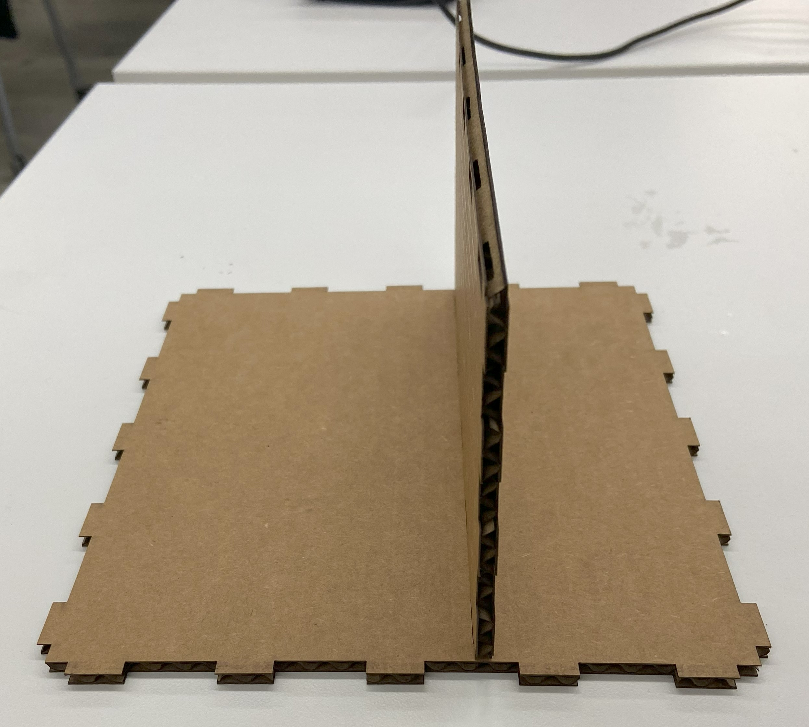
Step 2
Push plateau (for motor) plate into middle plate.
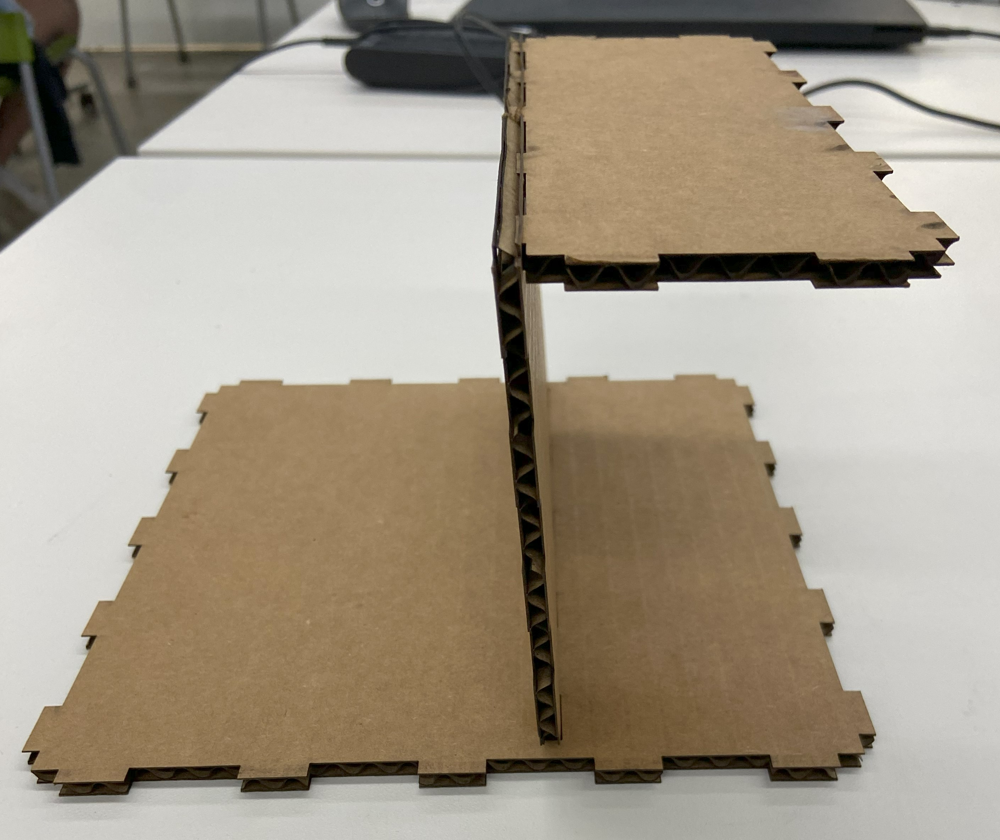
Step 3
Push side plate into bottom plate, middle plate, and plateau plate. First one side, then the other.
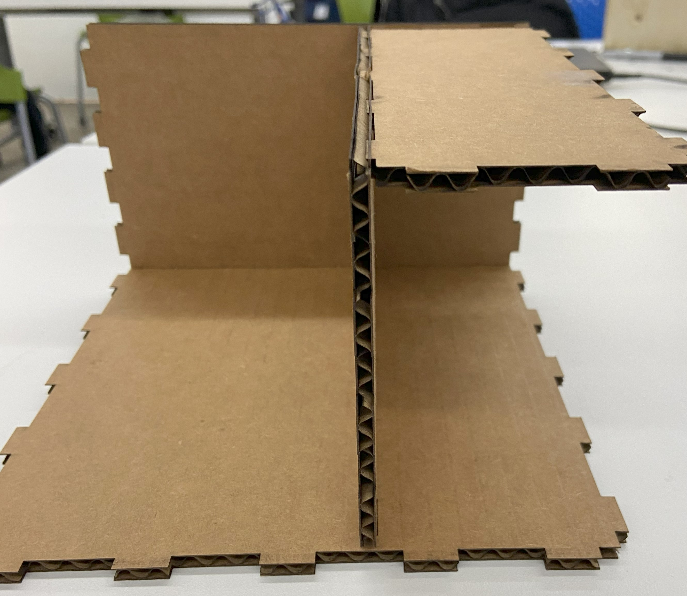
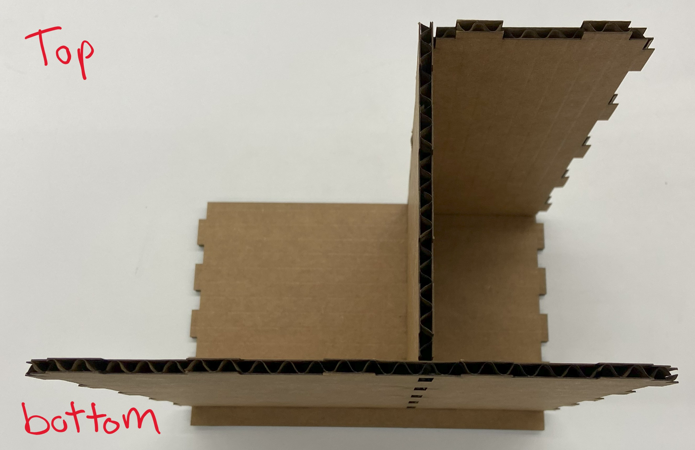
Step 4
Put the front and back plates into place.
Final Product:
Frontview
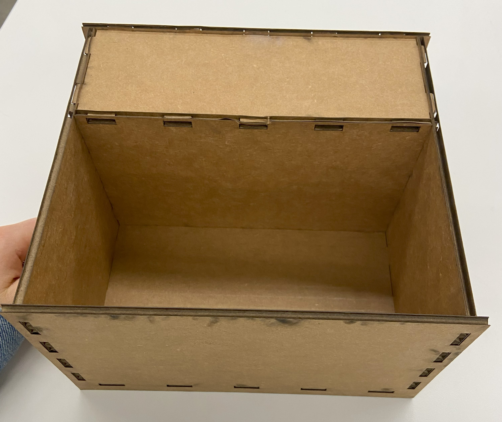
Sideview
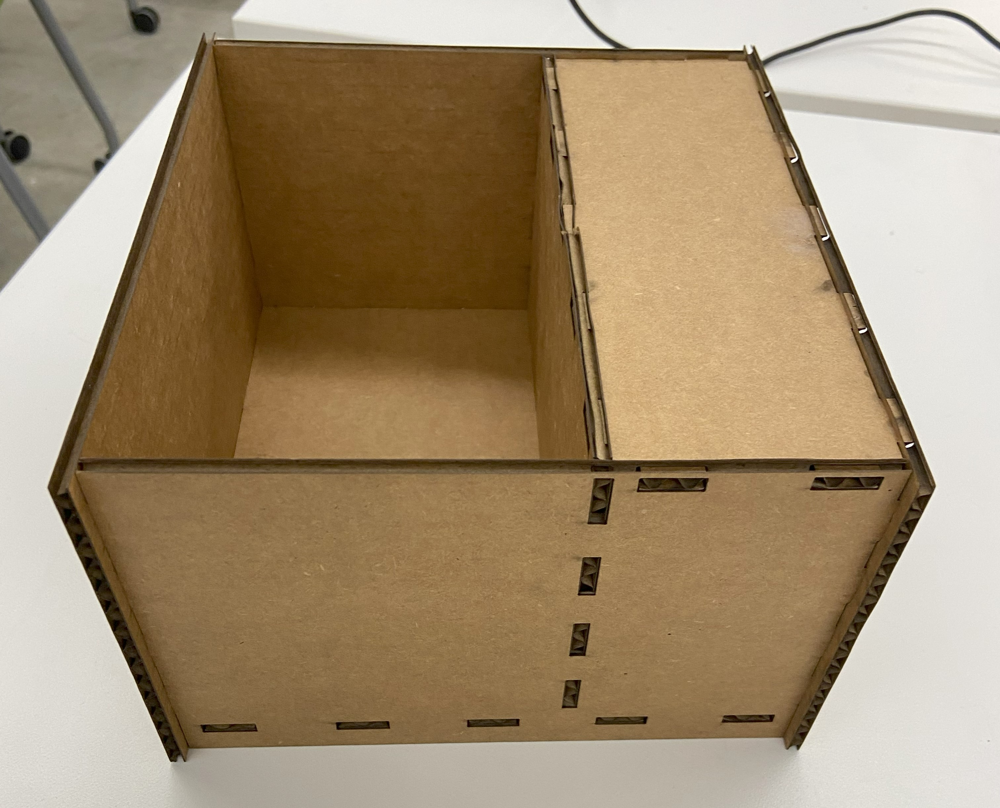
With pump, plant cup and water bottle:
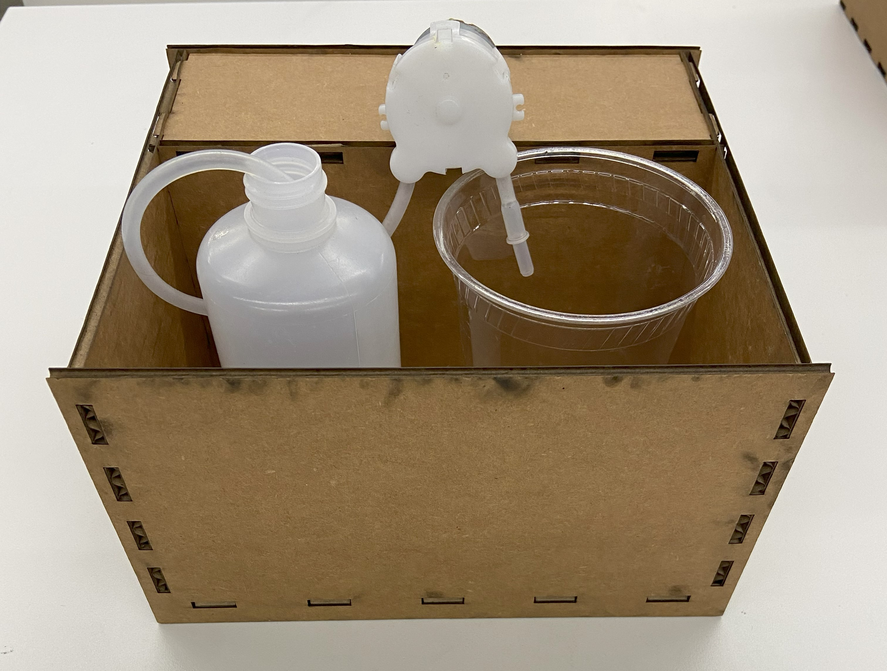